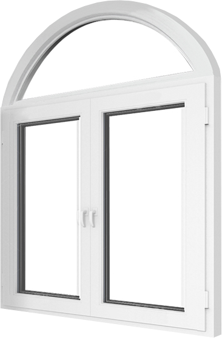

Приклади робіт
Yukatana River Terrace: м.Біла Церква, вул. Запорізька, 23
Pentagon: м.Біла Церква, вул. Бульвар Олександрійський, 155
Деякі проекти будинків мають нестандартні форми, розміри та геометрію віконних отворів. Тому для них встановлюються конструкції нестандартної форми: квадратної, круглої, овальної, арочної, багатокутної форми.
Фірма "ВІД" пропонує металопластикові та алюмінієві конструкції будь-яких форм, кольорів та параметрів, володіючи тими ж тепло- та звукоізоляційними параметрами що і стандартні вікна, двері.

Арочні конструкції
У пошуках незвичайності та витонченості, клієнти все частіше звертають увагу на арочні конструкції. Вони виготовляються на спеціальних верстатах. Профіль розігрівають до високих температур і вже розм'якшеної конструкції надають напівкруглої форми.
Трикутні (трапецієподібні) конструкції
Ще один вид нестандатного вікна, який часто використовується для будинків та дач з гострим верхом. Такі вікна встановлюють поверх вище за інші, вгорі конструкції. Для таких вікон можна розробити будь-який вигляд, який підкреслить екстер'єр Вашого будинку.
Круглі конструкції
Ще один поширений спосіб висловити інтер'єр. Відмінно підійде для бібліотеки, ванної, для горища, басейну. Зазвичай кругле вікно встановлюється "глухим", але є можливість зробити його відчиненим, що зробить процес його експлуатації ще комфортнішим і приємнішим.
Еркерні конструкції
Оригінальне рішення для створення неповторного вигляду Вашої оселі. Вони візуально роблять приміщення ширше, пропускають більше світла, а також збільшують корисну площу підвіконь. Це найкраща ідея підкреслити оригінальність Вашої оселі.
Приклади робіт
Yukatana River Terrace: м.Біла Церква, вул. Запорізька, 23
Pentagon: м.Біла Церква, вул. Бульвар Олександрійський, 155
Розробка та встановлення нестандартних вікон та дверей проводиться в індивідуальному порядку, з урахуванням розмірів та побажань клієнта. Фірма "ВИД" допоможе створити неперевершений дизайн Вашої оселі. Менеджер допоможе підібрати форму, колір та дизайн для Вашої квартири, будинку, офісу. Телефонуйте за номером +38(097)393-25-74.